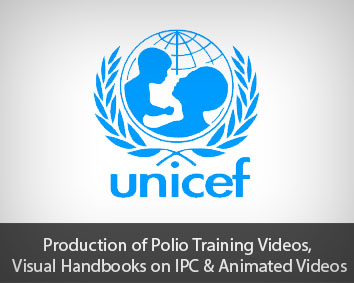
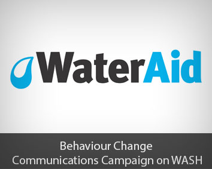
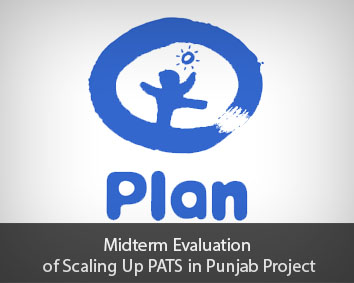

AAN Associates operates as a Social Enterprise, where the work is driven by motivation to facilitate and enable development partners to explore innovative, sustainable and contextually relevant solutions to development challenges. For this we consider ourselves as Partners in knowledge innovation. AAN Associates has seen significant growth in the portfolio over last few years, which is both humbling and inspirational. The success has made us look for new models and approaches for sustainable growth in portfolio. Simultaneously, AAN Associates is charting new territories to further broaden our portfolio and profile. Read more ..
Development Consulting
This division offers a whole range of development consulting services.
Dev. Communication &Tech
The division specializes in information technology and development communication.
VISION, MISSION & VALUES
Vision
Leading consultants enabling partners in pursuit of sustainable development results.
Mission
Engage with partners in pursuit of sustainable development results by extending services with demonstrated professionalism, innovativeness, complete integrity and ethics, and continually exceeding expectations.
Value
- Working with change leaders
- Service excellence through associates network
- Innovative and sustainable solutions & client capacity development
- Building bonds from clients to partners
- Respect and Integrity
WHAT WE DO
- Policy and Strategy Planning
- Program Development and Management
- Research, Monitoring and Evaluation
- Organizational Development, Training & Knowledge Management
- Development Communication & Technology
The policy and strategy planning services include policy formulation, strategy development, strategic and operational planning and budgeting, technical assistance in implementing the policy and organizational reforms. The focus has so far been on public sector policy and strategy planning, public private partnerships and networking.
our team
Nadeem Haider
Managing Director
Mr. Haider is a senior development consultant with over 17 years of professional experience in management, advisory, and consulting roles. Mr. Haider, has worked with and been engaged on short/medium term consulting work with range of development stakeholders including bi/multilateral donors, UN agencies, statutory and non-profit organizations and public sector partners.
Amna Wasim
Managing Partner
Amna wasim holds a bachelors degree from Hgskolen of Hedmark and is educationist by profession. Over 10 years of experience working in public and private sector. She has thorough competency of cultural diversity and understanding with a solid know how of corporate communications, public relations and marketing ranging to administration, recruitment and training.
Asmat Ali Gill
Manager Projects Management
Mr. Asmat Gill brings diverse academic background with Masters in Public Health Economics & Management and pharmacy. With over 15 years of experience, Mr. Gill brings evaluation and researching experience and has remained involved in design of research and evaluation, survey management, field data collection, analysis and reporting.
Yasir Afzal
Manager Development Communication & Technology
Mr. Yasir Afzal brings 13 years of national and international technical and management oversight experience with institutions of IT and Media Industry. The portfolio includes IT, Broadcast IT, Management and Technical, and others with leading IT stakeholders & TV channels i.e. Geo TV Network, Rohi TV. Mr. Afzal holds Masters Degree IT, and is a Certified Microsoft System Engineer.
Latest Project

AAN is engage with UNICEF of their up-coming polio campaign for this campaign we developed community mobilization tools which include 6 training videos These videos will focus on social mobilizers and front line health workers to enable them to respond affectively, 2 visual handbooks on IPC, 4 animations and these animated video will focus on awareness of polio campaign and disease.

A joint project of AAN Associates and White Rice Communication for the development of strategy for Multi-Year Countrywide Behaviour Change Communication Campaign on Water, Sanitation and Hygiene WASH.

Plan International, Pakistan has awarded this contract to AAN Associates for the Midterm Evaluation of Scaling up Pakistan Approach to total Sanitation in Punjab province of Pakistan .The goal of this project is to improve the health and well-being, and reduce vulnerability to WASH related disease, for rural communities in four districts in Punjab. Plan international Pakistan with the technical support of Plan International, Australia and financial support of the Australian Government, is currently implementing this 4 year (2014-2017) project.
Corporate Social Responsibility
AAN, being a responsible entity is committed to contributing to the larger societal results. This we demonstrate through putting serious efforts in our work and taking responsibility for what we do. Moreover, we encourage staff and consultants to contribute whatever way and extent they can. AAN contributes by offering matching contributions, which mostly get spent on disadvantaged. The focus remains on enabling those benefitting from the assistance to become self-reliant, for which major contributions go towards education. The assistance prioritises the team members and those related/known to them.


{kind=link}
{kind=link}
{kind=link}
{kind=link}